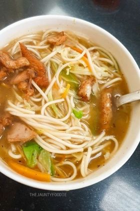
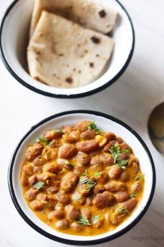

Delicacies

Thukpa
It is a warm soupy nutrient rich one-pot noodle dish, which comes with assorted vegetables and derives its flavour from the meat, ginger and garlic.

Madra
It is a thick yoghurt based gravy popular in Himachal. Most of the time it is prepared in Himachal's traditional dhaam and is eaten alongside rice.
Siddu
It is a regularly consumed delicious and healthy traditional dish.
It is a steamed wheat bun which includes a filling which can be sweet or savoury.

Tudkiya Bhath
It is a slow cooked dish made with rice, masoor dal and yoghurt in various rare aromatic spices like black stone, mace and star anise giving it a distinct flavour.
Momos
These are a type of steamed filled dumpling in Tibetan and Nepali cuisine. The filling can be meat or vegetables and these are usually served with various types of dips.

Chha Ghosht
This exotic dish of Himachal Pradesh consists of marinated mutton pieces slowly cooked in gram flour and yoghurt gravy has flavours rangigng from mildly spicy, tangy to sweet.
Dham
The dham is a saatvik vegetarian thali consisting of madra, chamba(milk and lentils),chana dal, khatta, kadhi and meethi bhat(sweet rice), mithdee, boondi and buttermilk called jhol.
Laphing
Laphing is a spicy cold plain flour noodle dish in Tibetan cuisine basically garnished with tsulazi (chilli oil), soy sauce, vinegar, etc,. It is made of mungbean starch. The noodles have a slippery texture.
Maggi
A bowl of Maggi in the hills has a different charm altogether, served steaming hot with a healthy dose of eggs, tomatoes, onions, and other condiments are perfect to go alongside a cup of hot tea.